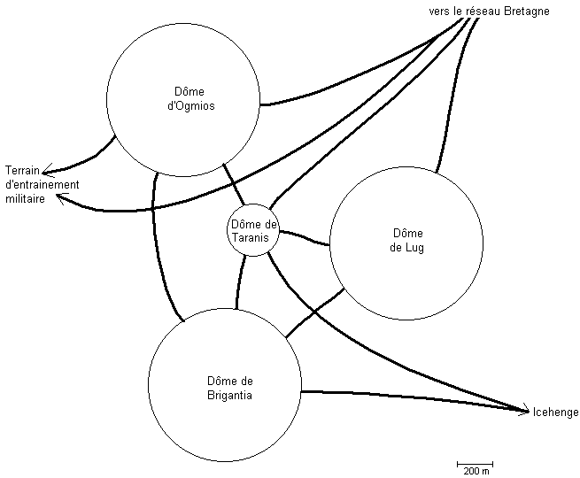

Le jeu de rôles de la Compagnie des Glaces
Britanny Network
La Secte
En fait, derrière toutes ces actions (meurtres, rachat de fermes, trafic avec la Z.O.) se cache une secte dirigée par une personne plutôt mégalomane, l'actionnaire Mino Kerb. Ce dernier rêve d'être le maître absolu d'une compagnie et a décidé d'en créer une par sédition du Réseau Bretagne de la TransEuropéenne. Comme cela ne se fera pas facilement, il procède progressivement :
Pour écarter quelques gêneurs ou témoins et pour aussi frapper les esprits, il les fait exécuter, décapiter et jeter leur corps sans tête sur les quais des stations :
Les dirigeants de la secte sont :
| Titre | Nom civil | Nom de secte |
| Grand-Maître : | Mino Kerb | (Nominoë Ker Breitz) |
| Grand-Prêtre : | Yan Pohur | (Yann Poher) |
| Chef Militaire : | Wen Kerb | (Gwen Ker Breitz) |
Ys Station
Pour préparer son coup de force, Mino Kerb a fait construire à l'écart des réseaux une station secrète qu'il nomma Ys Station. Il est quasiment impossible d'atteindre la station par la voie normale : c'est la voie privée de l'actionnaire Mino Kerb et elle est très surveillée par les membres de la secte. Une locomotive qui s'y engage sera intercepté et les cadavres des occupants seront retrouvés décapités dans une station du réseau Bretagne. Les accès secondaires, ne sont pas moins surveillés.
Les moyens pour accéder à la station sont soit se dissimuler dans un convoi qui va vers Ys Station (ils se retrouvent dans le dôme d'Ogmios ou dans celui de Lug), soit utiliser les réseaux des pêcheurs et de traverser la banquise à pied (cinq kilomètres sans rails : les joueurs vont-ils supporter l'absence de rails ?).
D'autre part, les joueurs ne peuvent pas espérer venir seuls à bout de la Secte. Ils ne sont ni assez nombreux, ni assez armés pour le faire. Leur but doit être d'obtenir le maximum d'informations pour faire un rapport le plus complet possible au lieutenant Darcer et à Frère Pierre.
Ys Station se décompose en quatre dômes dont chacun est nommés d'un nom de dieu celtique en fonction de sa fonction :

Icehenge est un monument construit en glace sur le modèle de Stonehenge et où se déroulent les cérémonies religieuses de la secte. Il est à l'extérieur et il n'y a rien à y trouver, mais tous les habitants d'Ys Station doivent obligatoirement assister aux cérémonies. Cela peut être l'occasion de fouiller des trains. Les informations intéressantes sont dans le dôme de Brigantia (le dôme de Taranis restant inaccessible) :
Pour quitter la station, les possibilités sont les mêmes que pour l'arrivée : se dissimuler dans un convoi, ou rejoindre à pied le réseau des pêcheurs.